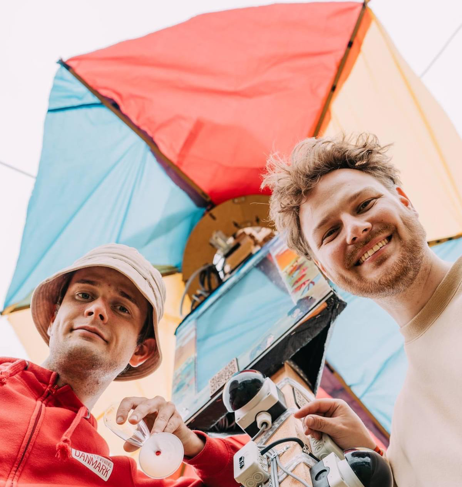
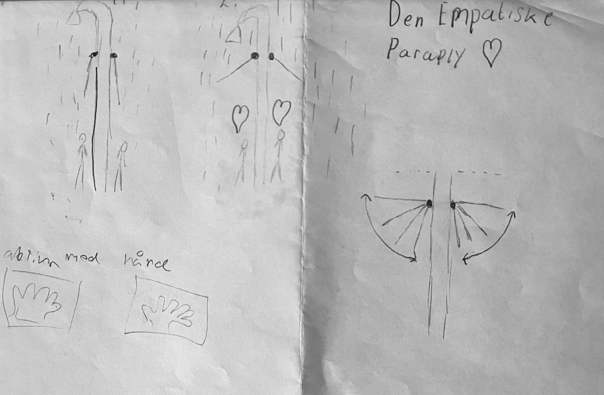
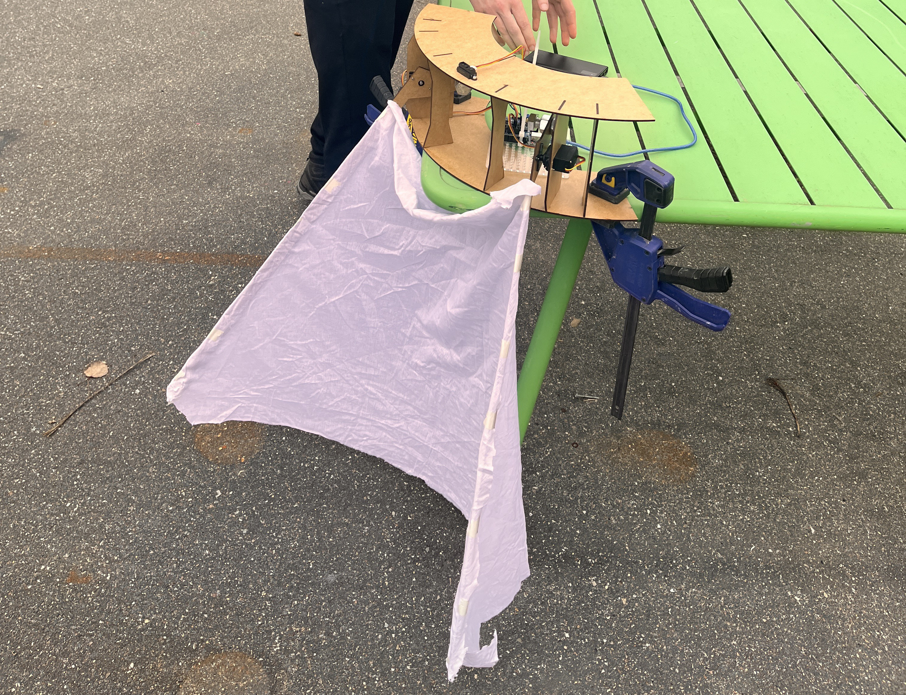
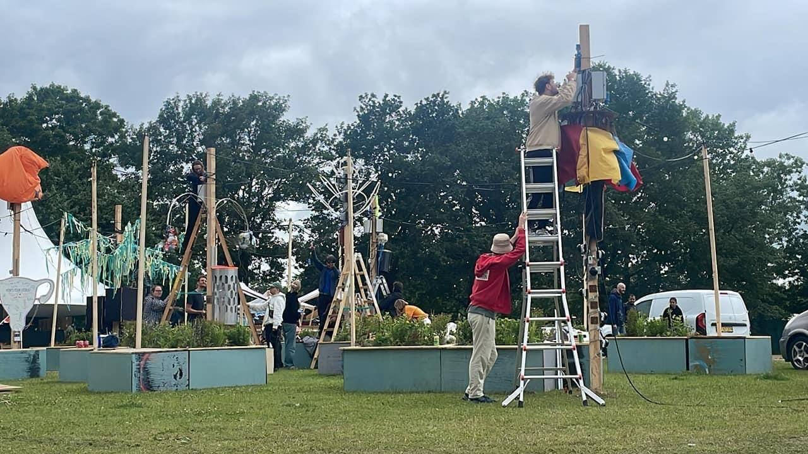
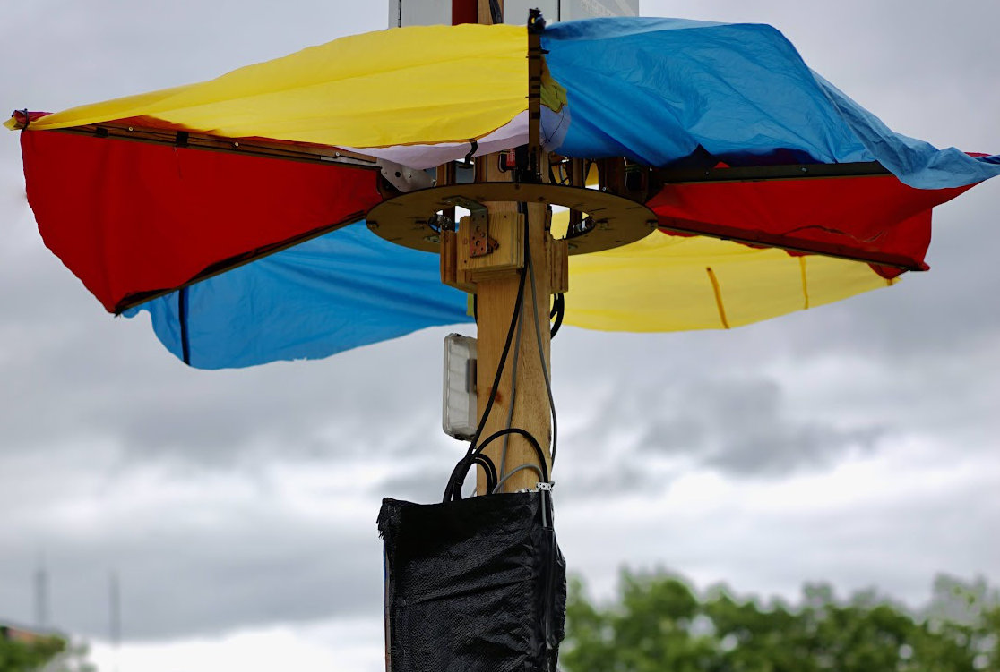

En interaktiv kunstinstallation udviklet til Roskilde Festival. Projektet kombinerede bevægelses sensorer, programmering, servoer og interaktivt design for at skabe et fælles mødested for festivalgængerne.

De første tanker omkring hvordan en almindelig genstand som en paraply kunne forvandles til et interaktivt lysværk. Der blev lavet skitser over placering af lysdioder og sensorer.

Test af Arduino-mikrocontrolleren, lodning af NeoPixel LED-strips og opsætning af sensorer på breadboard for at tjekke lysmønstre og respons.

Montering af elektronikken i selve paraplystativet. Ledninger blev skjult, og strukturen blev forstærket, så den kunne modstå vind og vejr på Roskilde Festival.

Installation på festivalpladsen, hvor publikum kunne interagere med paraplyen og opleve, hvordan lyset reagerede på deres bevægelser.

// Indsæt din Arduino-kode herunder:
#include
Servo servo1;
Servo servo2;
Servo servo3;
Servo servo4;
Servo servo5;
Servo servo6;
int pos = 0;
bool lastState = false;
bool personNear = false;
void setup() {
Serial.begin(9600);
servo1.attach(8);
servo2.attach(9);
servo3.attach(10);
servo4.attach(11);
servo5.attach(12);
servo6.attach(13);
}
void loop() {
Serial.println(analogRead(A0)); //antal bevægelsessensor vi bruger og deres placering
Serial.println(analogRead(A1));
Serial.println(analogRead(A2));
Serial.println(analogRead(A3));
// myservo.write(pos);
/*
if (analogRead(A0) < 100 && pos < 95) {
pos = pos + 1;
} else if (analogRead(A0) > 100 && pos > 0) {
pos = pos - 1;
}
*/
if((analogRead(A0) >= 200) || (analogRead(A1) >= 200) || (analogRead(A2) >= 200) || (analogRead(A3) >= 200))
{
personNear = true;
Serial.println("PN t");
}
else
personNear = false;
if((personNear == true) && (lastState == false))
{
lower();
lastState = true;
Serial.println("now True");
delay(2000);
return;
}
if((personNear == false) && (lastState == true))
{
raise();
lastState = false;
Serial.println("now False");
delay(2000);
return;
}
//Serial.println(pos);
/*
pos = constrain(pos, 0, 95);
servo1.write(95 + pos); //antal servo der kobles på dvs. servo1,2,3,4 osv.
servo2.write(95 + pos);
servo3.write(95 + pos);
servo4.write(95 + pos);
servo5.write(95 + pos);
servo6.write(95 + pos);
*/
delay(500);
}
void raise()
{
for(int i = 10; i<= 90; i++)
{
servo1.write(i); //antal servo der kobles på dvs. servo1,2,3,4 osv.
servo2.write(i);
servo3.write(i);
servo4.write(i);
servo5.write(i);
servo6.write(i);
delay(30); //Ændre hastighed på armene
}
}
void lower()
{
for(int i = 90; i>= 10; i--)
{
servo1.write(i); //antal servo der kobles på dvs. servo1,2,3,4 osv.
servo2.write(i);
servo3.write(i);
servo4.write(i);
servo5.write(i);
servo6.write(i);
delay(30); //Ændre hastighed på armene
}
}
}